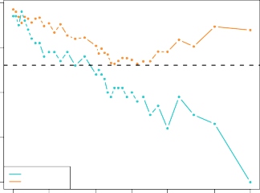
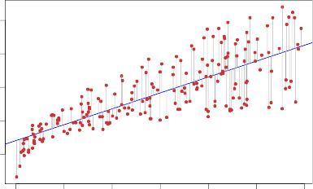
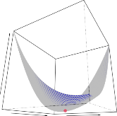
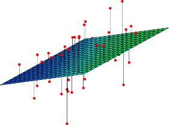

| < 2.2.3 The Classification Setting | 2.3 Lab Introduction To Python > |
💡 학습 팁: 조금 더 쉽고 재미있게 공부하고 싶으신가요? 이 페이지는 중학생도 이해할 수 있는 친절한 ‘쉬운 해설판’입니다! 영어 원문을 문장 단위로 꼼꼼하게 번역한 느낌을 원하신다면 📖 직역본 보기 메뉴를 활용하세요!
K -Nearest Neighbors
K -최근접 이웃 (다수결의 원칙을 따르는 투표 로봇)
In theory we would always like to predict qualitative responses using the Bayes classifier. 솔직히 말해서 교과서적인 이상향(이론)만 따지자면, 우리는 오답 방어율 1위인 갓벽한 ‘베이즈 분류기’ 형님만 평생 모시며 팀 고르기(질적 응답) 퀴즈를 풀고 싶습니다.
But for real data, we do not know the conditional distribution of $Y$ given $X$, and so computing the Bayes classifier is impossible. 하지만 현실은 지옥이죠. 실제 더러운 데이터 판에서는 “이 아저씨가 암일 확률($X$ 일 때 $Y$ 의 조건부 분포)” 그딴 건 조물주 빼고 아무도 모릅니다. 그래서 통계 확률표가 싹 다 박살 나있기 때문에, 진짜 베이즈 분류기를 계산기로 두들겨서 만드는 건 완전히 불가능한 개꿈입니다.
Therefore, the Bayes classifier serves as an unattainable gold standard against which to compare other methods. 그러니까 베이즈 분류기는 “아, 저렇게만 되면 소원이 없겠네!” 하면서 다른 기계들의 성적을 깎아내릴 때 쓰는, 하늘에 떠 있는 닿지 않는 ‘황금 잣대(gold standard)’ 같은 전설의 포켓몬 역할만 합니다.
Many approaches attempt to estimate the conditional distribution of $Y$ given $X$, and then classify a given observation to the class with highest estimated probability. 그래서 인간들은 삐까뻔쩍한 기계들을 수없이 만들어 내서, 어떻게든 어떻게든 진짜 확률 분포를 ‘추정’하려고 발악합니다. 그리고는 “아마 이쪽이 확률이 젤 높을 거야!” 하고 자신들이 어림잡아 계산한(추정한) 확률을 믿고 사람들을 가장 높은 확률 부서로 때려 박습니다(분류).
One such method is the K-nearest neighbors (KNN) classifier. 그 수백 가지 꼼수 기법들 중에서 가장 직관적이고 널리 쓰이는 녀석이 바로 ‘K-최근접 이웃(K-nearest neighbors, 약칭 KNN)’ 분류기입니다.
Given a positive integer $K$ and a test observation $x_0$, the KNN classifier first identifies the $K$ points in the training data that are closest to $x_0$, represented by $\mathcal{N}_0$. 이름부터 감이 오죠? 우리가 머릿수로 $K$ (예: 정수 3)를 정해주고 낯선 새로운 아저씨($x_0$)를 딱 데려오면, 이 KNN 로봇은 다짜고짜 훈련장 데이터 더미 속을 뒤져서 지금 이 아저씨($x_0$)랑 얼굴 힌트나 몸무게가 가장 소름 돋게 똑같이 생긴(가장 가까운) 도플갱어 $K$ 명을 딱 잡아와서 방($\mathcal{N}_0$ 그룹)을 만듭니다.
It then estimates the conditional probability for class $j$ as the fraction of points in $\mathcal{N}_0$ whose response values equal $j$: 그리고 그 방 안에 납치해 온 $K$ 명 한테 물어봅니다. “야, 너희들 중에 혹시 당뇨병(클래스 $j$) 걸린 놈 손들어!” 그렇게 손을 든 놈들의 머릿수 비율을 가지고, 이걸 아예 “새로 온 아저씨가 당뇨병일 확률”이라고 통치고(추정치 계산) 뻔뻔하게 질러버립니다. 수식으로 쓰면 이렇습니다:
\[Pr(Y = j|X = x_0) = \frac{1}{K} \sum_{i \in \mathcal{N}_0} I(y_i = j) \tag{2.12}\]Finally, KNN classifies the test observation $x_0$ to the class with the largest probability from (2.12). 마지막으로, KNN 로봇은 저 다수결 투표(2.12 수식 비율) 결과에 따라 “당뇨라고 손 든 놈이 더 많네? 그럼 새로 온 저 아저씨도 당뇨병($j$ 팀) 확정!”이라며 가장 투표수가 많은(확률 짱) 부서로 쿨하게 낙인을 찍어(분류) 버립니다.
Figure 2.14 provides an illustrative example of the KNN approach. 그림 2.14가 바로 이 무식하고도 직관적인 다수결 KNN 원리를 유치원생도 이해하게 보여주는 예절 주입기입니다.
In the left-hand panel, we have plotted a small training data set consisting of six blue and six orange observations. 왼쪽 도화지를 볼까요? 조촐하게 블루베리(파란 점) 6알이랑 귤(주황 점) 6알이 훈련 연습용으로 흩어져 있습니다.
Our goal is to make a prediction for the point labeled by the black cross. 우리의 퀘스트는 정중앙에 뜬금없이 나타난 정체불명의 ‘검은색 십자가’ 아저씨가 블루베리인지 귤인지 다수결로 때려 맞추는(예측) 겁니다.
Suppose that we choose $K = 3$. 자, 우리가 다수결 투표에 참가할 이웃의 쪽수(정수)를 K=3 (가장 가까운 3명) 으로 세팅했다고 칩시다.
Then KNN will first identify the three observations that are closest to the cross. 그럼 KNN 로봇은 자나 깨나 거리를 재면서 십자가에서 코 닿을 만큼 가장 가까이 붙어 앉아있는 3명의 도플갱어 찡구들을 콕 짚어냅니다.
This neighborhood is shown as a circle. 그 다수결 투표에 동원된 3명의 이웃 구역이 한가운데 그려진 점선 ‘동그라미’로 표시되어 있죠.
It consists of two blue points and one orange point, resulting in estimated probabilities of $2/3$ for the blue class and $1/3$ for the orange class. 원 안을 살짝 들여다보면 블루베리 2알과 귤 1알이 포위되어 있습니다. 자, 다수결 투표 결과! 블루베리 지지율은 $3명 중 2명(2/3)$, 귤 지지율은 고작 $1/3$ 로 계산(추정)되어 나왔습니다!
Hence KNN will predict that the black cross belongs to the blue class. 빼박 다수결 승리죠! 그러므로 우람한 KNN 기계는 “음, 블루베리가 2표로 이겼군. 고로 이 검은 십자가 녀석은 파란색 블루베리 소속이다!” 라고 우렁차게 판결(예측)을 때립니다.
In the right-hand panel of Figure 2.14 we have applied the KNN approach with $K = 3$ at all of the possible values for $X_1$ and $X_2$, and have drawn in the corresponding KNN decision boundary. 오른쪽 도화지는 뭐냐고요? 방금 그 십자가 퀴즈를 그냥 이 우주의 세상 모든 바닥 타일($X_1, X_2$ 좌표) 위에서 하나하나 다 K=3인 로봇을 밀어 넣고 투표를 시켜서, “어디서부터가 블루베리 땅이고 어디서부터가 귤 땅인지(KNN 결정 경계)” 삐뚤빼뚤한 검은 마커 국경선을 쫙~ 그어본 겁니다.
Despite the fact that it is a very simple approach, KNN can often produce classifiers that are surprisingly close to the optimal Bayes classifier. 사실 이 KNN이라는 놈은 수식 하나 없이 거리 재고 친구 수만 세는 동네 꼬마 같은 알량하고 무식한 방식인데, 이 녀석이 현장에서는 종종 신의 경지인 ‘최적의 베이즈 분류기’랑 소름 돋게 똑같은 예측 능력(결정 경계)을 뽑아내는 미친 기적을 일으키곤 합니다!
Figure 2.15 displays the KNN decision boundary, using $K = 10$, when applied to the larger simulated data set from Figure 2.13. 그림 2.15를 보시면 아주 적나라합니다. 아까 2.13에서 피 터지던 그 대규모 전투판에다가 이번엔 이웃 투표수를 $K=10$ (10명 다수결)으로 키운 KNN 로봇을 방생해서 검은 점선 국경선(KNN 결정 경계)을 그어봤습니다.
Notice that even though the true distribution is not known by the KNN classifier, the KNN decision boundary is very close to that of the Bayes classifier. 놀라운 건 뭡니까! 비록 이 멍청한 KNN 기계는 신이 숨겨놓은 진짜 귤 확률표(진정한 분포)를 1도 모르는데, 기계가 발로 그린 삐뚤빼뚤한 ‘검은 국경선(KNN)’이, 우리가 아까 절을 하며 떠받든 조물주의 완벽한 보라색 ‘베이즈 국경선’과 미치도록 흡사하게 겹쳐서 진행되고(very close) 있다는 사실입니다!
The test error rate using KNN is $0.1363$, which is close to the Bayes error rate of $0.1304$. 실전 수능 성적 오답률도 볼까요? 이 멍청한 KNN의 시험 오차율은 $0.1363$ 인데, 이건 우주 최강 절대 한계선인 베이즈 오차율 $0.1304$ 에 불과 0.005 차이로 아찔하게 후방을 위협하며 바짝 쫓아가고(close) 있습니다.
The choice of $K$ has a drastic effect on the KNN classifier obtained. 하지만 이웃을 몇 명이나 부를 거냐, 즉 방장 맘대로 정하는 투표수 $K$ (K의 선택) 를 몇으로 튜닝하냐에 따라 이 KNN 로봇은 천사가 되기도 하고 미친 좀비가 되기도 하는 극단적인 롤러코스터 부작용(drastic effect)을 겪습니다.
Figure 2.16 displays two KNN fits to the simulated data from Figure 2.13, using $K = 1$ and $K = 100$. 그림 2.16이 그 참사의 현장입니다. 이번엔 극단적으로 다수결을 달랑 1명($K=1$)한테만 묻는 KNN 로봇과, 동네방네 100명($K=100$)이나 끌어 모아서 투표하는 로봇 두 마리를 굴려서 그린 검은 국경선 꼬라지를 비교해 보세요.
When $K = 1$, the decision boundary is overly flexible and finds patterns in the data that don’t correspond to the Bayes decision boundary. 다수결 인원이 고작 $K=1$ 명일 때 꼴을 보세요. 기계의 관절 조종이 완전 고장 나서 너무 고무줄처럼 미치도록 유연해져 버렸습니다! 그래서 그냥 땅에 떨어진 귤 하나만 봐도 흥분해서 신이 그려놓은 보라색 베이즈 국경선을 완전히 씹어먹으면서 저 혼자 지독하게 구불구불 발작하는 패턴(오버핏)을 그려대고 있죠.
This corresponds to a classifier that has low bias but very high variance. 우리가 아까 배웠듯, 이런 애들은 자존심 똥고집(편향)은 쓰레기통에 버렸지만 귀가 너무 얇아서 먼지만 한 귤 하나에도 선을 뒤틀어버리는 전형적인 ‘매우 높은 분산(팔랑귀 폭주)’ 환자입니다.
As $K$ grows, the method becomes less flexible and produces a decision boundary that is close to linear. 반대로 투표수를 쭉쭉 늘려서 $K$ 가 왕창 커지면 어떻게 될까요? 사공이 백 명($K=100$)이나 되다 보니, 소수의 의견 따윈 개나 주면서 기계가 융통성(유연성)을 확 잃고 노잼이 됩니다. 그래서 그림처럼 국경선이 구불거리지도 못하고 그냥 판자처럼 거의 직선(선형)으로 무식하고 뻣뻣하게 찍~ 그어져 버립니다.
This corresponds to a low-variance but high-bias classifier. 백 명이나 오합지졸로 물어보니 귀가 얇은 기질(낮은 분산)은 싹 나았는데, 대신 선이 일자로 뻣뻣해지면서 자존심만 오지게 센 구제불능의 똥고집(높은 편향) 분류기가 탄생한 셈이죠.
On this simulated data set, neither $K = 1$ nor $K = 100$ give good predictions: they have test error rates of $0.1695$ and $0.1925$, respectively. 결과적으로 이 전쟁터 위에선 관절이 고장 난 K=1 발작 로봇이나, 너무 뻣뻣하고 뚱뚱한 K=100 로봇이나 둘 다 실전에서 아주 더럽게 똥볼을 찼습니다(좋지 못한 예측). 수능 점수가 각각 $0.1695$ 와 $0.1925$ 로 둘 다 망해버렸거든요.
Just as in the regression setting, there is not a strong relationship between the training error rate and the test error rate. 여기서도 숫자 맞추기(회귀) 때 숱하게 들었던 절대 법칙은 죽지 않았습니다. “집구석 연습장 오답률(훈련 오차율) 좋다고, 실전 수능 오차율(시험 오차율)도 좋을 거란 강한 환상은 버려라!”
With $K=1$, the KNN training error rate is 0, but the test error rate may be quite high. $K=1$ (가장 가까운 자기 자신만 보고 투표) 일 때를 상상해 보세요. 자기가 자기 정답을 베끼니까 연습 모의고사(훈련 오차) 성적은 항상 기가 막히게 무조건 퍼펙트 0입니다. 하지만 낯선 수능장에 풀어놓으면 저 발작하는 선 때문에 실전 오차율(수능 점수)은 우주 밖으로 떡상해 버리게 되는 최악의 헛똑똑이가 되죠.
In general, as we use more flexible classification methods, the training error rate will decline but the test error rate may not. 정리하자면, 팀 고르기(분류) 세계에서도 기계를 말랑말랑하게 풀어줄수록 연습장 에러 점수는 신나게 수직 낙하하겠지만, 실전 수능 에러는 어느 순간 배신을 때리고 저 멀리 통수를 치러 갈 수 있다는 겁니다.
In Figure 2.17, we have plotted the KNN test and training errors as a function of $1/K$. 이 현기증 나는 널뛰기를 한눈에 보라고 준비한 마지막 그림 2.17! 가로축에 기계의 유연성을 담당하는 게이지인 ‘$1/K$’ 를 깔아두고 모의고사(훈련 에러)와 수능(시험 에러) 선이 서로 어떻게 멱살을 잡나 그려봤습니다.
As $1/K$ increases, the method becomes more flexible. 조심하세요, $K$ 값이 아니라 분모로 들어간 $1/K$ 가 증가할수록(즉, 투표수 $K$ 가 1명으로 확 쪼그라들수록) 기계는 귀가 얇아져서 선을 요동치며 그리는 ‘더욱 무지막지하게 유연한 형태’ 로 진화합니다.
As in the regression setting, the training error rate consistently declines as the flexibility increases. 회귀 때랑 똑같죠? 가로축이 커져서 로봇이 유연함에 미쳐 날뛸수록 모의고사 치팅을 기가 막히게 하면서 파란 줄(훈련 오차율)은 0점을 향해 바닥으로 냅다 꽂히며 일관되게 하락 성적을 자랑합니다.
However, the test error exhibits a characteristic U-shape, declining at first (with a minimum at approximately $K=10$) before increasing again when the method becomes excessively flexible and overfits. 하지만 우리의 잔혹한 빨간 수능 선(시험 에러)! 요 녀석은 유연성을 살짝 주면 초반엔 사이좋게 에러가 깎여나가며 $K=10$ 언저리에서 황금 계곡(최저 오차점)을 찍더니, 로봇이 쓸데없이 $K=1$ 급으로 극성맞게 유연해져 버리면서(오버핏, 과적합) 갑자기 하늘로 고개를 쳐드는 ‘그놈의 소름 돋는 U자 미끄럼틀 미들 고개 형상’ 을 여지없이 또 똑같이 재현해 내고 말았습니다.

FIGURE 2.14. The KNN approach, using K = 3 , is illustrated in a simple situation with six blue observations and six orange observations. Left: a test observation at which a predicted class label is desired is shown as a black cross. The three closest points to the test observation are identified, and it is predicted that the test observation belongs to the most commonly-occurring class, in this case blue. Right: The KNN decision boundary for this example is shown in black. The blue grid indicates the region in which a test observation will be assigned to the blue class, and the orange grid indicates the region in which it will be assigned to the orange class.
그림 2.14. 다수결 KNN 3명($K=3$)으로 돌려본 모의 배틀 투표장. 왼쪽 도화지: 정체불명 십자가 뉴비가 가운데 떨어졌죠. 잽싸게 자 들고 제일 가까운 3놈을 동그라미로 묶어 봤더니 파란 놈이 다수결로 이겼습니다! “넌 파란 팀이다!” 하고 쿨하게 땅땅 예측(판결)해 버리는 현장이죠. 오른쪽 도화지: 기계가 도화지 바닥 전체를 돌면서 “여기서부터 귤, 저기는 블루베리!” 하고 K=3짜리 규칙으로 그어본 삐뚤어지고 좀비 같은 검은 잉크 바닥 (결정) 국경선입니다.

FIGURE 2.15. The black curve indicates the KNN decision boundary on the data from Figure 2.13, using K = 10 . The Bayes decision boundary is shown as a purple dashed line. The KNN and Bayes decision boundaries are very similar.
그림 2.15. KNN의 다수결을 10명($K=10$)으로 튜닝해서, 아까 대규모 전장판을 다시 휘저으며 그어본 꼬불 검은 선(결정 경계). 그런데 뒤에 점선 보이나요? 저게 조물주의 정답(베이즈 경계)인데 둘이 형제처럼 똑같이 포개져(very similar) 기적의 경계선을 달성한 모습이 압권입니다.
In both the regression and classification settings, choosing the correct level of flexibility is critical to the success of any statistical learning method. 결론 돌직구 날려드립니다! 당신이 집값(숫자)을 찍든 암 진단을 갈라치기(분류)하든, 이 세상 어느 통계 판이든 기계의 ‘관절 꺾기 유연도 레벨’을 꿀단지 타이밍에 맞춰 딱 좋게 조절하는 것이야말로 당신 프로젝트의 목숨줄을 쥐락펴락(필수적) 하는 결정타입니다!
The bias-variance tradeoff, and the resulting U-shape in the test error, can make this a difficult task. 왜 골 때리냐고요? 이 두 얼굴의 악마인 편향-분산 눈치 게임 트레이드오프와, 뒤통수를 후려 갈기는 그 지긋지긋한 실전 오차 U자 미끄럼틀 패턴이 그 꿀단지 좌표 튜닝 퀘스트를 피 토하게 빡센(difficult) 지옥 난이도 과제물로 영원히 박제해버리기 때문이죠.

FIGURE 2.16. A comparison of the KNN decision boundaries (solid black curves) obtained using $K=1$ and $K=100$ on the data from Figure 2.13. With $K=1$, the decision boundary is overly flexible, while with $K=100$ it is not sufficiently flexible. The Bayes decision boundary is shown as a purple dashed line.
그림 2.16. 환장의 KNN 국경선 뇌절 파티 콜라보. K=1 로 돌리면(위) 기계가 미쳐서 먼지 하나에도 선을 요동치며 베이즈 보라 점선을 다 씹어먹는 팔랑귀가 되고, 반대로 K=100 (아래)으로 늙은 꼰대 스위치를 켜면 선형 판자처럼 국경이 뻗뻗해져 똥고집을 부려 망해버리는 끔찍한 실전 실패 예시들입니다.

FIGURE 2.17. The KNN training error rate (blue, 200 observations) and test error rate (orange, 5,000 observations) on the data from Figure 2.13, as the level of flexibility (assessed using $1/K$ on the log scale) increases, or equivalently as the number of neighbors $K$ decreases. The black dashed line indicates the Bayes error rate. The jumpiness of the curves is due to the small size of the training data set.
그림 2.17. 가로축은 기계의 관절 꺾기 게이지($1/K$ 증가 = 더 고무줄 유연해짐 = $K$ 쪽수 감소). 유연해질수록 파란 오답 노트 곡선은 0으로 땅굴을 파지만, 주황빛의 찐 수능 오차 점수 선은 어느 순간 하늘 높은 줄 모르고 고개를 쳐드는 또 그 ‘망할 U자 공포’를 재확인 시켜줍니다. 검은 점선은 우주 한계 바닥인 베이즈 에러율이죠! 곡선이 지저분하게 튕구는 것(불규칙성)은 연습장이 달랑 200장밖에 안 돼서 잡음이 낀 탓입니다.
In Chapter 5, we return to this topic and discuss various methods for estimating test error rates and thereby choosing the optimal level of flexibility for a given statistical learning method. 이 지옥 같은 고난은 여기서 끝이 아닙니다. 저~ 뒤 5장으로 시간 이동하면 우린 이 빌어먹을 주제로 다시 좀비처럼 귀환합니다. 거기서 미래 시험지가 없을 때 어떻게든 실전 성적(시험 오차율)을 꼼수로 추정해서 꿀단지 최적 유연성 다이얼을 돌리는 기상천외한 잡기술 방법론들을 피 터지게 토론할 것입니다. 기대하세요!
Sub-Chapters (하위 목차)
| < 2.2.3 The Classification Setting | 2.3 Lab Introduction To Python > |